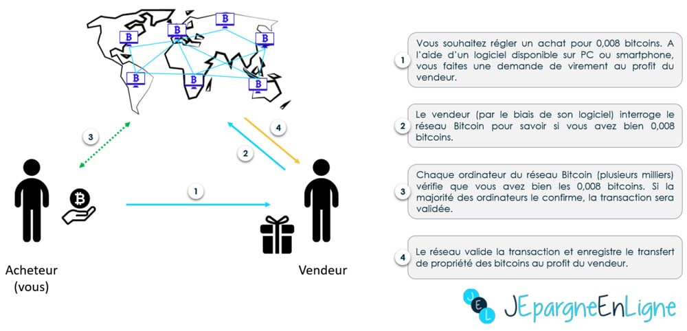

1. Fonctionnement, Mode de Création et de Circulation
-
-
Histoire du bitcoin
-
Le bitcoin a besoin de deux mécanismes sous-jacents pour fonctionner : la blockchain et le minage. Fonctionnement du système de paiement bancaire :

-
Fonctionnement du système de paiement Bitcoin :
 -
Le système de paiement est totalement anonyme, le réseau Bitcoin identifie les utilisateurs en leur attribuant des pseudonymes. Ce qui donne quelque chose comme ceci : Utilisateur #105 donne 0,008 bitcoins à Utilisateur #198.
-
-
Fonctionnement du Bitcoin
-
Le bicoin a besoin de deux mécanismes sous-jacents pour fonctionner : la blockchain et le minage.
La blockchain : c’est quoi ?
-
Développée à partir de 2008, la blockchain est en premier lieu une technologie de stockage et de transmission d’informations. Cette technologie offre de hauts standards de transparence et de sécurité car elle fonctionne sans organe central de contrôle. Plus concrètement, la blockchain permet à ses utilisateurs connectés en réseau de partager des données sans intermédiaire.
La blockchain ou chaîne de blocs est une base de données distribuée qui contient toutes les transactions sur bitcoin réalisées jusqu'à présent. Ces transactions sont regroupées sous forme de "blocs" qui sont sécurisés cryptographiquement durant la phase de minage et liés entre eux. La chaîne de blocs est accessible à tous et à tout moment. Elle ne peut être modifiée qu'avec l'accord de la majorité du réseau et leur puissance de calcul. Cela signifie qu'il est pratiquement impossible de la modifier rétroactivement, qu'elle n'a aucun point faible et qu'elle n'est pas vulnérable aux erreurs humaines.
Le minage, c’est quoi ?
-
Le minage c’est le procédé par lequel les transactions Bitcoin sont sécurisées. A cette fin les mineurs effectuent avec leur matériel informatique des calculs mathématiques pour le réseau Bitcoin. Comme récompense pour leurs services, ils collectent les bitcoins nouvellement créés ainsi que les frais des transactions qu’ils confirment. Elle est divisée par deux tous les quatre ans environ. Le 12 mai 2020 cette récompense passera à 6,25 bitcoins par bloc.
-
-
Son mode de Création et de Circulation
-
Pour créer et gérer les bitcoins, Bitcoin s'appuie sur un logiciel. Dans ce logiciel, les bitcoins sont créés conformément à un protocole qui rétribue les agents (appelés mineurs) qui ont traité des transactions. Ces agents mettent à contribution leur puissance de calcul informatique afin de vérifier, de sécuriser et d'inscrire les transactions dans un registre virtuel, appelé la blockchain, en français chaîne de blocs, nom qui vient du fait que l'entité de base de Bitcoin s'appelle un bloc, et que les blocs sont ensuite reliés en une chaîne, la chaine de blocs.
Pour chaque nouveau bloc accepté, l'activité de vérification-sécurisation-enregistrement, appelée minage, est rémunérée par des bitcoins nouvellement créés et par les frais des transactions traitées. En tant que monnaie ou commodité, les bitcoins peuvent être échangés contre d'autres monnaies ou commodités, biens ou services. Le taux d'échange de la cryptomonnaie est fixé sur des places de marché spécialisées et fluctue selon la loi de l'offre et de la demande.Les mineurs doivent vérifier la validité d'un certain nombre de transactions bitcoin qui sont regroupées dans un bloc.
Cela implique de vérifier 20 à 30 variables différentes, telles que l'adresse, le nom, l'horodatage, de s'assurer que les expéditeurs ont suffisamment de valeur dans leurs comptes et qu'ils ne l'ont pas déjà dépensé, etc.
Les mineurs s'affrontent alors pour être les premiers à faire accepter leur validation en résolvant une sorte de casse-tête.
Le casse-tête consiste à trouver un nombre – appelé nonce, pournombre utilisé une fois
– qui, lorsqu'il est combiné avec les données du bloc et exécuté à travers un algorithme spécifique, génère une chaîne aléatoire de chiffres et de lettres à 64 chiffres.
Ce nombre aléatoire doit être inférieur ou égal à la cible à 64 chiffres définie par le système, connue sous le nom de target hash.
Une fois que le nonce est trouvé qui génère le hachage cible, le nouveau bloc du mineur gagnant est lié au bloc précédent afin que tous les blocs soient enchaînés ensemble.
Cela rend le réseau inviolable car la modification d'un bloc modifierait tous les blocs suivants. Le résultat est diffusé sur le reste du réseau blockchain et tous les nœuds mettent ensuite à jour leurs copies de la blockchain. Ce processus de validation, ou mécanisme de consensus, est connu sous le nom de proof of work (preuve de travail en français).
Le mineur gagnant reçoit des bitcoins nouvellement frappés ainsi que les frais de transaction payés par l'expéditeur.
-